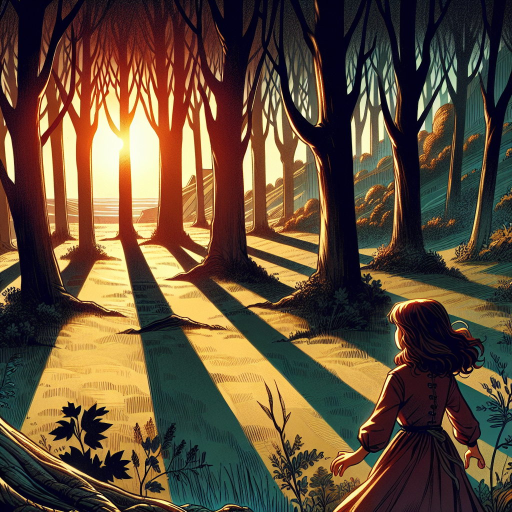
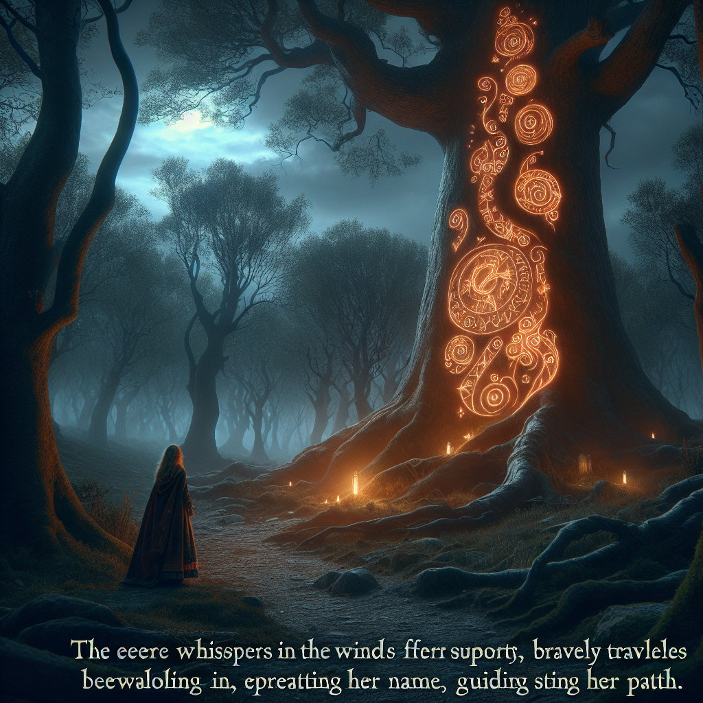
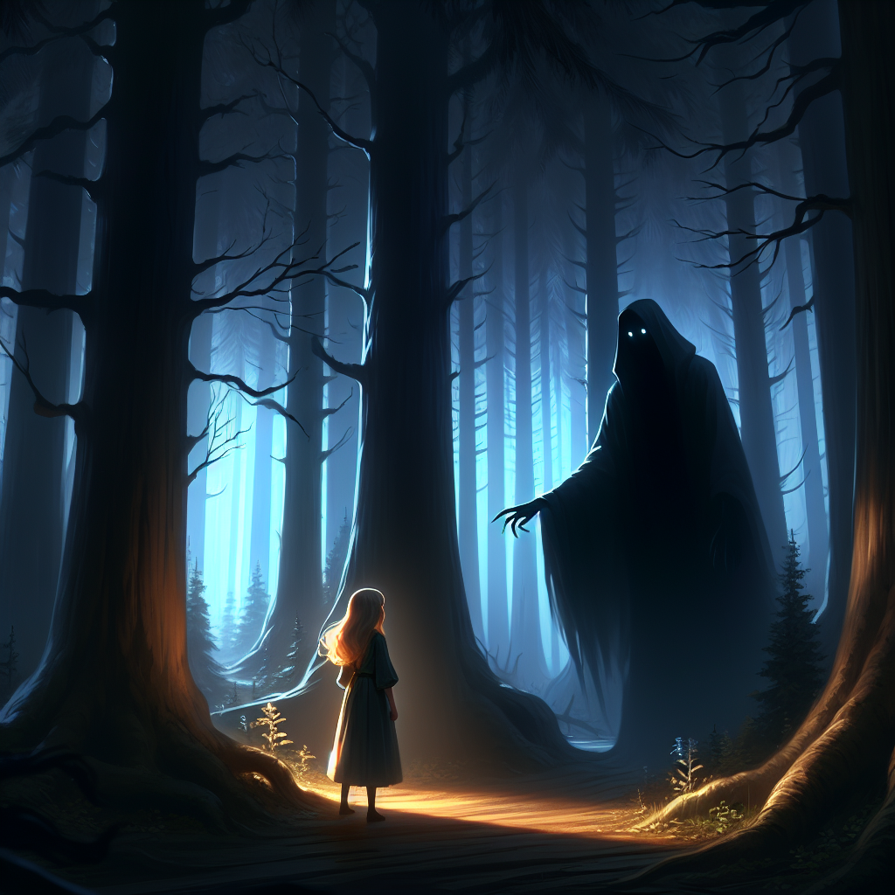
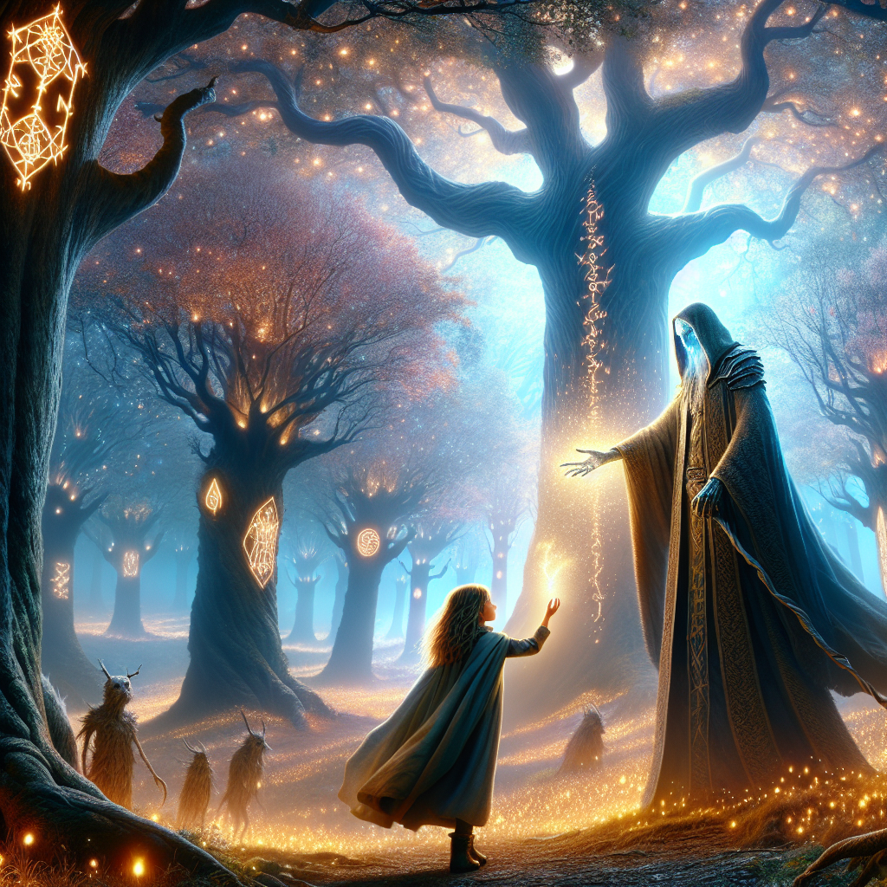
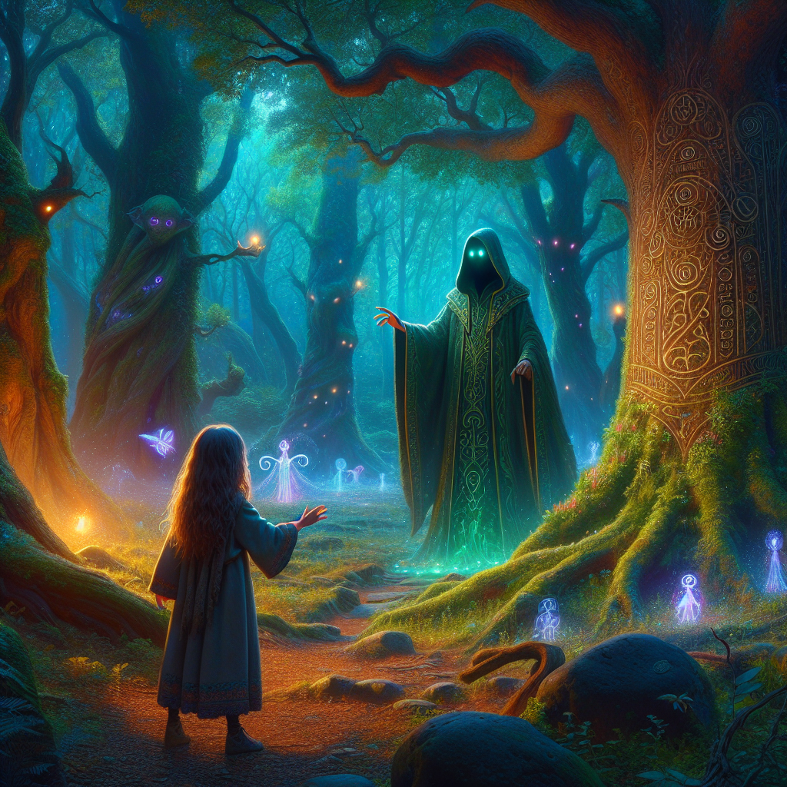
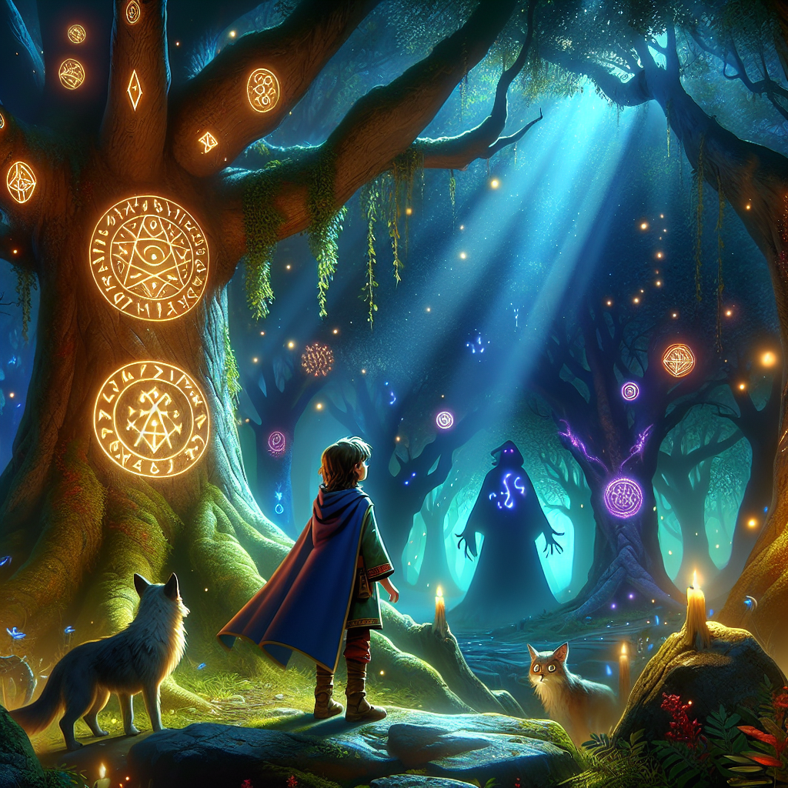

Generated Scenes
- Scene 1: Once upon a time, a young girl named Elara
wandered into a forest near her village. The sun was setting, casting
long shadows between the ancient trees. Elara had always been curious
about the stories of the forest, where it was said that magic still
lingered.",

- Scene 2: As she ventured deeper, she heard a soft
whisper in the wind, calling her name. She followed the sound until she
reached a clearing. In the center stood a giant oak tree with glowing
runes etched into its bark.",

- Scene 3: Suddenly, a figure emerged from the shadows — a
tall, cloaked figure with glowing eyes. The figure extended its hand
towards Elara, and as she hesitated, the forest around her seemed to
breathe with anticipation.",

- Scene 4: Elara finally stepped forward, placing her hand
in the figure’s. In an instant, the runes on the tree glowed brighter,
and the forest transformed into a vibrant, magical realm filled with
shimmering lights and strange creatures.",

- Scene 5: But as the magic unfolded, Elara realized that
the figure was not an enemy, but the guardian of the forest, who had
been waiting centuries for someone with a pure heart to unlock the
forest's ancient power.",

- Scene 6: With a single word, the guardian disappeared, leaving Elara in the enchanted forest, now its protector.

Back